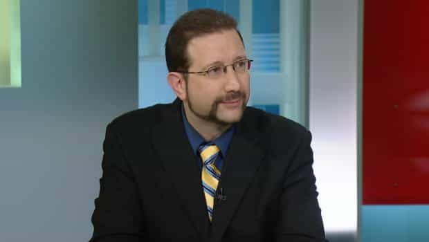
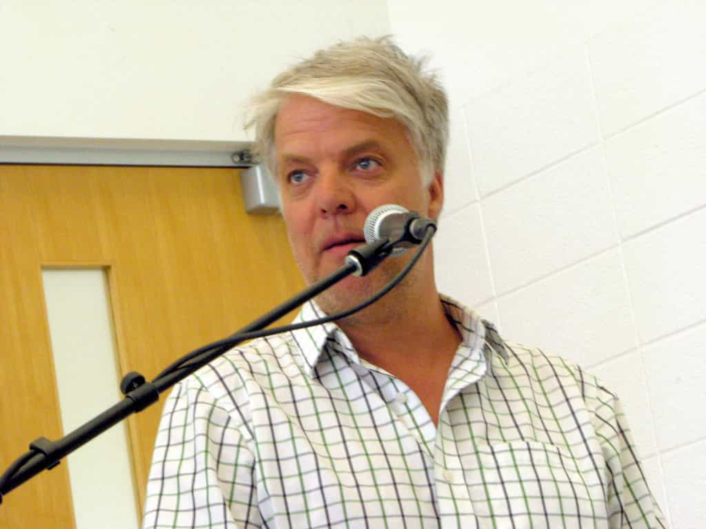

< < < Back
How The Toronto Media Is Enabling Lies Aimed At Roosh’s World Tour – Return Of Kings
With his Toronto lecture looming this weekend, the local media has rabidly denounced ROK publisher Roosh Valizadeh in dozens of television news stories, radio excerpts and print articles. His defiant Montreal speech, as you know, was met with unprecedented fury from SJWs, before, during and after the event.
The misinformation and defamatory statements spread by Toronto media outlets are shaping up to be even more ad hominem, nasty, and violence-condoning than anything in Quebec.
As covered meticulously on ROK so far, feminists have resorted to false rape threat allegations, physical threats ([1] [2] plus more) and other intimidation tactics to try and shut down, futilely, Roosh’s right to free speech. The Toronto media will continue to assist them, and here are three of the most egregious examples of “journalistic” bias against him in recent days.
“Psychology” 101 with “tabloid psychologist” Dr. Oren Amitay

Being a professional media consultant in addition to practicing psychology, Oren Amitay benefits from quick, unconsidered “appraisals” of people. It is a serious conflict of interest.
In 2012, Roosh wrote an article on his personal website entitled “14 Things You Didn’t Know About Roosh”. In it, he revealed things such as having schoolyard fights he lost and that most of his life is boring. With seemingly all the data of a 20-year field study involving ten Nobel laureates, City News took this information to Dr. Oren Amitay, who proceeded to almost psychoanalyze him (despite being a psychologist) based on several lines of Roosh’s writing at a time.
In relation to having had schoolyard fights, Amitay opines that “this is someone that,” as if juvenile Roosh from two to three decades ago can somehow be conflated with the 36-year-old Roosh of today. Considering that probably a third to over half of all children have lost several or more schoolyard “fights” (usually just a few punches involving scratches and tears), it is startling that Dr. Amitay isn’t called upon every day to render a new quasi-diagnosis for anyone disliked by SJWs.
I am also surprised that this “professional” didn’t equate one-year-old Roosh soiling his diapers with a probable interest in scatology in 2015. That’s honestly how far back and how desperately Amitay is trying to dig to promote himself.
What’s interesting about Oren Amitay is that he’s a registered psychologist and a media consultant. Instead of a considered, clinical setting in which to ascribe concepts, motives and characteristics to people, Amitay has made these pronouncements without ever having met Roosh, “safeguarding” himself by inserting occasional words and phrases such as “possibility” and “if this is true.”
In fact, as a media consultant, it is entirely in Amitay’s interest to have quick, less than three minute interviews with his name attached so he can “diagnose” strangers, which seems more like a pickup artist cold reading a girl in a bar than anything resembling a scientific process. There’s a reason why psychologists aren’t usually media consultants.
Glenn Pelletier and the white knight rat race

Super white knight Glenn Pelletier gave Shannon Dea an unmitigated platform to defame and misrepresent Roosh, plus allowed her to claim without contestation that “all the statistics” in society favor men.
Filling in on The Eric Drozd Show, Glenn Pelletier interviewed Shannon Dea, Director of Women’s Studies at the University of Waterloo. Amidst a fusillade of explicit and implicit bogus accusations that Roosh glorifies violence against women, Dea spouted the usual feminist fanfare to Pelletier, namely that “all the statistics” favor men. She conveniently forgot, of course, that men represent the majority of both homicide victims and non-fatal assault victims, commit suicide at four times the rate of women, and get paid less in their 20s now than women of the same age.
A recurring theme of the vitriol against Roosh has been the lustful willingness of submissive men to chase after and vilify Roosh for women, from the pack of males backing up Jessica Lelievre’s violent mob “leadership” to the manginas supporting “rape culture” protests. Pelletier fulfilled this obligation on Wednesday, gleefully lapping up the “good doggy” patting of Dea for “supporting women.”\
He didn’t mention that the mob that attacked, tried to attack again, and then falsely imprisoned Roosh and his companions after his lecture, or bring up any of the litany of violent threats against him throughout Twitter and other mediums.
Only regurgitating Roosh’s reasons not to date American women (without trying to counter them) and flogging their already dead horse, his February 2015 article, Pelletier and Dea were unable to paint any picture of the wider philosophy Roosh has created: self-improvement, male self-respect and challenging the cultural status quo.
If pressed to say what they know about Roosh, Pelletier’s audience would be clutching at straws, and very mangled ones at that.
Toronto’s CTV News falsely claimed SJWs forced the cancellation of the Montreal lecture
No fact-checking, no impartiality, no balance.
Deprived of the attention they crave, SJW Twitter fiends went into overdrive over the weekend and afterwards, claiming that the Montreal event never took place (then what’s this?). Abandoning any semblance of journalistic rigor, CTV News took these bizarre feminist divinations at face value and falsely claimed that Roosh was forced to cancel his lecture.
Not only has the media in Montreal and Toronto largely sided with SJWs, they have resorted to using them as supposedly impartial sources of information and gospel truth. After all, as newsmen and women, what’s the point of presenting a balanced and truthful account of an escalating controversy if you thoroughly despise the person you’re reporting about?
Condoning hate
With the Toronto economy struggling, Mayor John Tory has welcomed any opportunity to distract attention away from the pressing municipal problems he should be solving. He is the Mayor of Toronto, not the police or the federal or provincial government.
The problem is that by being continually silent about the mob mentality of SJWs, aside from finding it humorous, and the flurry of threats directed at Roosh over weeks, Toronto media outlets, like their Montreal counterparts, are giving carte blanche to the anti-social, dangerous and militantly fascistic behavior of feminists.
The political climate in Canda is so antithetical to his safety that Roosh has been forced to find six venues for Toronto (as of writing) and hire bodyguards. This underscores the ridiculous low to which Canadian free speech, freedom of expression, and political dialogues have fallen.
Should anything happen to Roosh, we can lay much of the blame on the Montreal and now Toronto media.
Read More: Feminist Jessica Lelièvre Assaults Roosh V On Street And Brags About It On Social Media